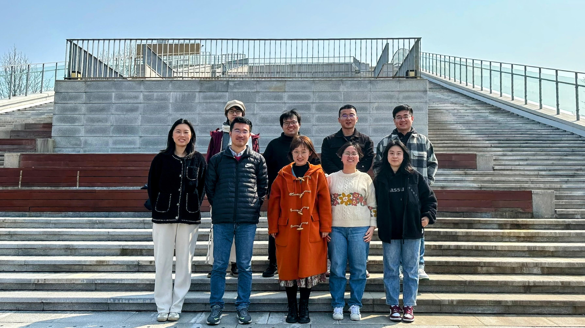

研究员(紫江青年学者)，博士生导师
华东师范大学
生态与环境科学学院
浙江天童森林生态系统国家野外科学观测研究站
地址：上海市闵行区东川路500号资环楼223
邮编：200241
邮箱：xingdingliang(at)gmail(dot)com

2009.09 – 2014.07: 理学博士 (专业：生态学，导师：郝占庆研究员)； 中国科学院沈阳应用生态研究所
2011.09 – 2012.01: 访问学生； [加拿大]阿尔伯塔大学可再生资源系
2005.09 – 2009.07: 理学学士 (专业：数学与应用数学)； 北京师范大学数学科学学院
2019.10 – : 研究员；华东师范大学生态与环境科学学院
2014.09 – 2019.09: 博士后 (合作导师：Prof. Fangliang He)； [加拿大]阿尔伯塔大学可再生资源系